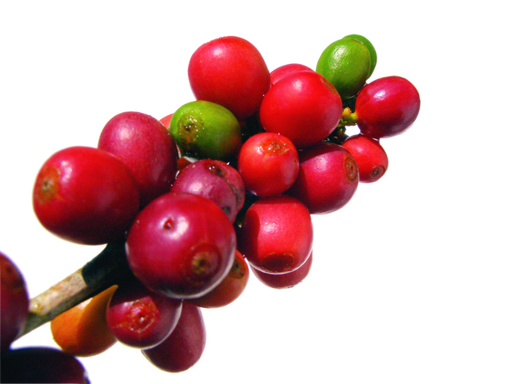

Sed lacinia, urna non tincidunt mattis, tortor neque adipiscing diam, a cursus ipsum ante quis turpis. Nulla facilisi. Ut fringilla. Suspendisse potenti.
 Nam ad harum audire, reque ubique sea cu. In ius primis definitiones. Eam ut falli sanctus, ad eum audire apeirian forensibus. Agam dicit eligendi sea ex, qui ei dicta solet suavitate. Qui tibique propriae repudiandae ad. Nunc feugiat mi a tellus consequat imperdiet. Vestibulum sapien. Proin quam. Etiam ultrices.